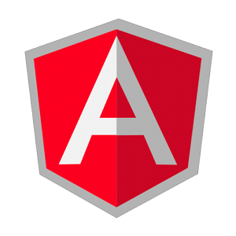
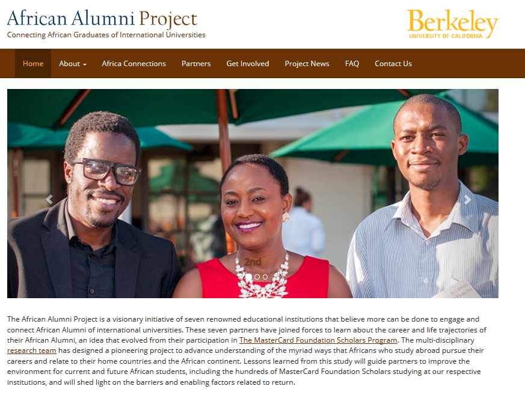

Projects
Dashboards (HTML/CSS/jQuery/JavaScript)
- Worked on re-designing the dashboards and their contents which was featured on their site.
- Mainly used HTML/CSS and jQuery along with JavaScript to animate elements on the page.
- Check out the finished work here!
Personal Website (HTML/CSS/JavaScript/jQuery)

- Coded website from scratch using HTML/CSS and Javascript/jQuery functions to animate elements on the page.
- Integrated BootStrap to make web content responsive across all platforms and to clean up code.
- You're currently using this project !
AngularJS Store (JavaScript/AngularJS))

- Designed an online store using AngularJS, using custom directives and taking advantage of dependency injection to incorporate multiple modules.
- Took advantage of AngularJS's two-way data binding feature to implement an interactive ratings system where users can post reviews which is then updated live to be viewed on the site.
File and Folder Compression (Java)
- Created a program that compresses all files in a specified folder by reassigning the most frequently occurring bits to shorter bits (Huffman Encoding Algorithm)
- Designed a decompressor that, given a compressed file, will return the original file with no loss
MapReduce (Python/Spark)

- Developed a depth-map generator that, given the left-eye and right-eye views of an image, will generate an image where each pixel is a function of its distance from the viewer (C)
- Designed an autostereogram generator that, given a depth-map, will output a 3D representation of the image (MIPS
African Alumni Project (HTML/CSS)

- Worked on front-end for the African Alumni Assocation website using WordPress plug-ins/themes
- Revamped the website by reformatting the home page, installing the carousel you see on the web-page, and making the website mobile friendly and functional across all web browsers.
- Launched the 'Africa Connections' portion of the website, created by converting website mock-up into HTML/CSS to share current events about how some of our University partners are staying connected all throughout the African Diaspora.
- Feel free to visit the website which can be found here.